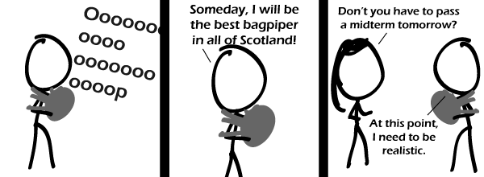

Comic JK 537
When I Feel Like It
⇤
<
?
>
⇥

⇤
<
?
>
⇥
Forum
.
RSS
.
Digg
.
Facebook
.
Reddit
.
Twitter
.
Stumbleupon
Enter your thoughts on number 537 here. Please, no spamming, trolling, or bad bagpiping. Mediocre bagpiping allowed for a small tax of 10 doughnuts. Your mother appreciates my pipes and I appreciate her bags. I'll hard but something like this has happen to me before. This is a sad, but true, occurrence. But you're not in Scotland. You're somewhere else. >THAT's your reason not to let him do that? Scotland? I don't believe in it. A conspiracy of cartographers! USA has more bagpipers than Scotland. Almost certainly not per capita, of course. >what about per pound of flesh? >>Certainly not I like to cook instead of studying/doing anything due very soon > Back in my days, kids wanked instead of studying. Whatever happened to kids nowadays, that they cook or play the bagpipe... waaaait a second... playing the bagpipes... >>well played, sir ! >>>'Twas a passable play on words.